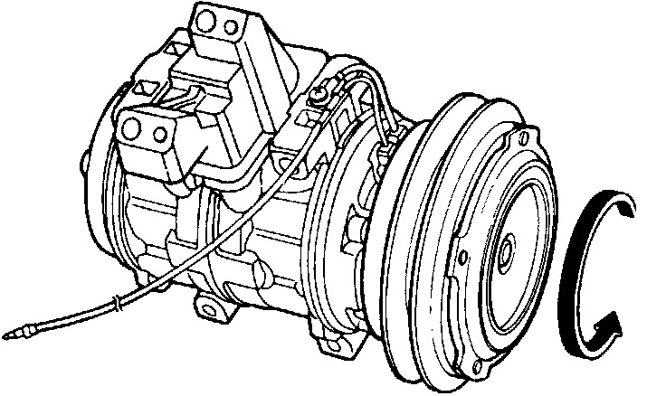
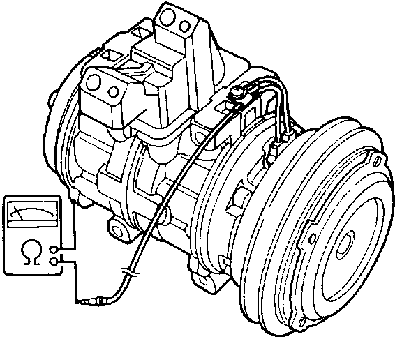
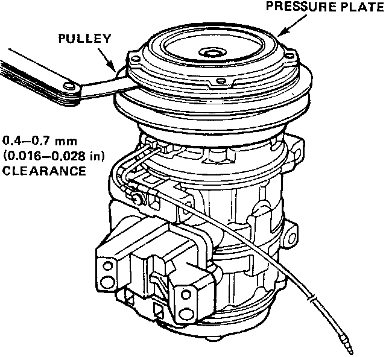
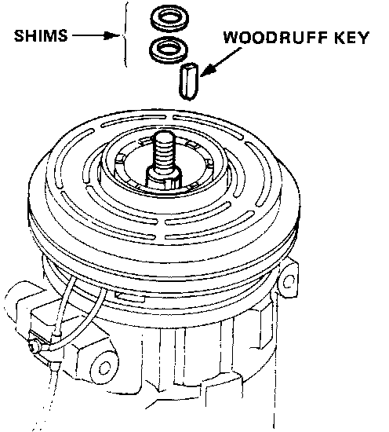

Compressor Clutch: Testing and Inspection
Clutch Inspection
- Check pulley bearing play and drag by rotating the pulley by hand. Replace the pulley with a new one if it is noisy or has excessive play or drag.

- Check resistance of the stator coil:
Stator Coil Resistance: 3.75 ±1 0.2 ohm at 20°C (68°F)
- If resistance is not within specifications replace the coil.

- Tighten the hub Nut to 15 - 17.5 N-m (1.5 - 1.75 kg-m, 11 - 12.7 lb-ft) and measure the clearance between the pulley and pressure plate all the way around. If the clearance is not within specified limits, the pressure plate must be removed and shims added or removed as required.

NOTE: The shims are available in six sizes: 0.1 mm - 0.2 mm thick. 0.1 mm shim is used for minor adjustment.